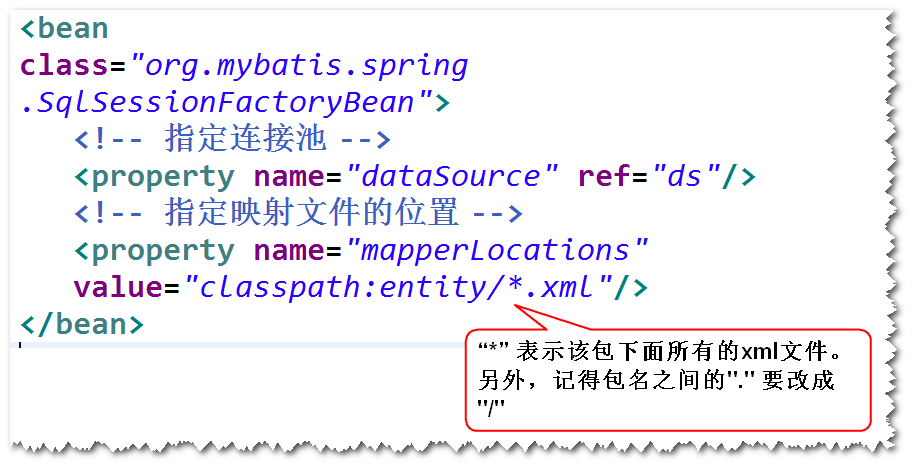

开源的持久层框架
注：底层仍然是jdbc。
jdbc 速度快，易掌握，要写sql,代码繁琐
mybatis 速度适中 易掌握，要写sql,代码简洁
hibernate 速度慢，比较难掌握，不用写sql,代码简洁
如果业务复杂，经常需要优化sql
step1. 导包
mybatis,ojdbc,junit
step2. 添加mybatis配置文件
注：
主要是连接池的配置和映射文件的位置。
mybatis自带了一个连接池。
step3. 实体类
注：
属性名要与表的字段名一样（忽略大小写）
step4. 添加映射文件
注：
主要是一些sql语句
step5. 修改配置文件，指定映射文件的位置。
step6. 调用MyBatis的api来访问数据库。
MyBatis在查询时，会将记录中的数据先存放到一个Map对象里面（
以字段名作为key,以字段值作为value）,接下来，再将Map对象
中的数据添加到实体对象里面。
获得Map类型的结果，指的是获得这个Map对象（这样，可以不用写
实体类）。
注：
实际使用当中，建议还是获得实体对象,这样获取数据时更方便。
1)方式一 使用别名
注：将别名设置成与属性名一样。
2)方式二 使用resultMap

是一个符合映射文件要求的接口。
注：MyBatis会生成一个符合该接口要求的对象。
step1.写一个接口
a. 方法名要与映射文件当中的sqlId一样。
b. 参数类型要与映射文件当中的parameterType一样。
c. 返回类型要与映射文件当中的resultType一样。
step2.修改映射文件
将namespace设置为接口名（要写接口的完整的名字)
step3.调用SqlSession对象的getMapper方法来获得映射器的实现

step1.导包
spring-webmvc,mybatis,mybatis-spring
ojdbc,dbcp,spring-jdbc,junit

step2.添加Spring配置文件
注：不再需要MyBatis的配置文件，MyBatis相关的配置用一个
bean来代替（SqlSessionFactoryBean）。
step3.配置SqlSessionFactoryBean

step4.实体类
step5.映射文件
step6.Mapper映射器
step7.配置MapperScannerConfigurer。
注：会扫描指定包及其子包下面的所有的Mapper映射器，
然后调用SqlSession的getMapper方法（该方法会返回
符合Mapper映射器要求的对象），并且将这些对象添加到
Spring容器里面（默认的id是首字母小写之后的接口名）。

step8.启动Spring容器，获得DAO对象。
注：如果只扫描特定的接口
step1. 开发一个注解
step2. 将该注解添加到要扫描的接口之上

step3. 修改MapperScannerConfigurer的配置
注：方式二是早期的一种集成方式，使用较少。
step1.导包
spring-webmvc,mybatis,mybatis-spring
ojdbc,dbcp,spring-jdbc,junit
step2.添加Spring配置文件。
step3.配置SqlSessionFactoryBean。
step4.实体类。
step5.映射文件。
注：namespace没有要求。
step6.DAO接口
注：不要求与映射文件一致。
step7.写DAO实现类
注： 注入SqlSessionTemplate
(SqlSessionTemplate封装了对SqlSession的操作)。

step8.启动Spring容器，获得DAO对象。
注：不要忘记添加组件扫描。
SpringMVC + Spring + MyBatis完成登录
step1.添加一些包 (mybatis,mybatis-spring)
step2.在Spring配置当中，添加SqlSessionFactoryBean
的配置，注意mapperLocations的值。
step3.实体类User( 不用写了，但是要注意属性名与
表的字段名不一致。建议使用别名)
step4.添加userMapper.xml。
namespace="cn.tedu.ems.dao.UserDAO"
<select id="findByUsername"
parameterType="java.lang.String"
resultType="cn.tedu.ems.entity.User">
SELECT password pwd...
</select>
step5.Mapper映射器(不用写了，UserDAO就是)
step6.配置MapperScannerConfigurer
step7.测试UserDAO
step8.测试整个登录